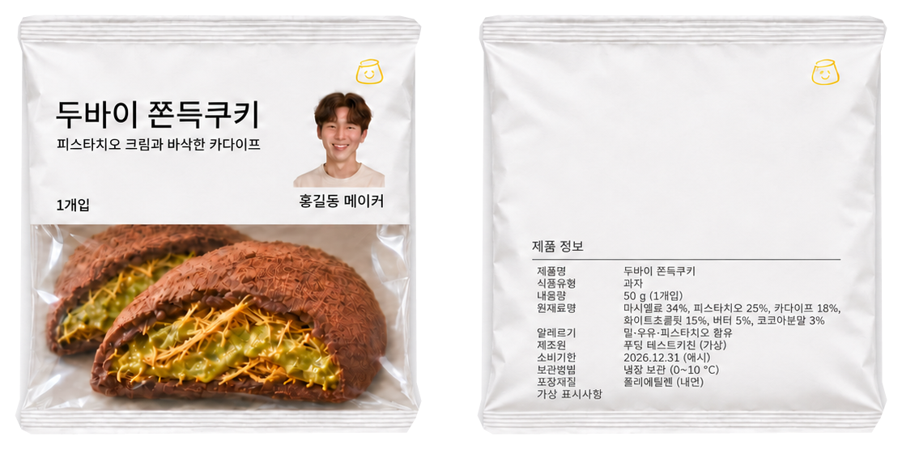

MAKER STORY
퇴근길에 먹고 싶던 디저트를,
직접 만들어 보기로 했습니다.
두바이 쫀득쿠키 · 홍길동 메이커

01 · ORIGIN
이 아이디어는 어디서 시작됐나요?
홍길동 메이커의 주방에는 오래된 찹쌀떡 틀이 하나 있습니다. 어릴 적 할머니가 명절마다 쫀득한 떡을 빚던 틀이에요. 그에게 쫀득함은 늘 ‘집의 맛’이었습니다.
대학생이던 어느 겨울, 친구가 가져온 두바이 디저트 한 조각에서 카다이프의 바삭함을 처음 만났습니다. 할머니의 쫀득함과 낯선 바삭함을 한 입에 담으면 어떨까. 아이디어는 그 생각에서 시작됐습니다.
02 · TRIAL
100번째 주말에 완성한 레시피
- 1~30번째마시멜로가 너무 달고 질겨서 먹다 남기기 일쑤였습니다.
- 31~70번째카다이프가 금세 눅눅해져, 버터에 볶아 바삭함을 지키는 방법을 찾았습니다.
- 71~99번째피스타치오 크림의 고소함과 단맛의 균형을 맞추려 배합을 수없이 바꿨습니다.
- 100번째가족 시식에서 아버지가 말했습니다. “이건 사 먹어야겠다.”
03 · FOODiing
레시피는 있었지만, 만들 방법이 없었습니다
식품을 판매하려면 제조 설비와 허가, 유통망이 필요합니다. 주방 하나뿐인 그에게는 어느 것도 없었습니다. 그래서 FOODiing에 레시피를 올리고, 먼저 소비자의 선택을 받아 보기로 했습니다.
- 01레시피 제안
- 02소비자 펀딩
- 03신세계푸드 제조
- 04이마트24 판매
목표를 달성하자 레시피는 신세계푸드와의 미팅으로 이어졌습니다. 상품이 출시되면 메이커는 신세계푸드 매출의 5%를 창작자 로열티로 받습니다.
제 레시피가 누군가의 퇴근길 간식이 된다면, 그걸로 충분히 행복할 것 같아요.
홍길동 메이커
PRODUCT
제품 정보
- 제품명
- 두바이 쫀득쿠키
- 내용량
- 50g (1개입)
- 알레르기
- 밀·우유·피스타치오 함유
- 보관방법
- 냉장 보관 (0~10°C)
※ 이 이야기와 패키지 표시사항은 시연을 위해 작성된 가상의 내용입니다.